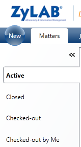

You have defined Custodians that possess potentially relevant data. Now you need to define where this data is stored and which file types need to be collected. Note: The Entropysoft Collector is not supported anymore.
Instructions
ZyLAB Legal Processing is open.
If the relevant matter is not yet opened, search and open it. The last created matter is shown first. You can search for a matter via the tabs on the left side of the screen:

All All created matters will be shown.
Active Active matters are all opened and being worked on.
Inactive Inactive matters are all closed. Nobody is working on them.
Checked-out Checked-out matters can be open (active) or closed (inactive), but only the person who has checked a matter out, can open it.
Checked-out by me Checked-out by my matters are matters from the logged-in user. They can be open (active) or closed (inactive). Only the logged-in user can open and work on them.
Select the Collection tab.
Select custodians, sources and locations using a wizard (see Define Custodians) or select them one-by-one (continue with step 5, or skip to step 9 to add locations)
Add Database Collector The Database Collector collects records and linked documents from various database systems.
Add Email Collector (Default/Enterprise) The Email Collector collects POP3/IMAP for e.g. Gmail and Hotmail.
Add Exchange Collector The Exchange Collector collects objects from Exchange and Exchange Online using Exchange Services. Objects are downloaded as EML files (as Exchange Connector).
Add File System Collector The File System Collector collect files from a specified location.
Add Google Drive Collector (Default/Enterprise) The Google Drive Collector collects files from the Google Docs site: http://docs.google.com.
Add ZyLAB LegalReview Collector The ZyLAB LegalReview Collector collects files from one Legal Review matter to another.
Add SharePoint Collector The SharePoint Collector collects objects from SharePoint Online through Client Object Models.
Add ZyLAB Data Collector The ZyLAB Data Collector collects data indexed with ZyLAB. It will combine files that belong together, for example ZyLAB TXT and TIFF files.
Repeat step 8 to add more locations that are connected to a source.
Click Save (continue editing or click Cancel to exit) or Save & Check-In (the Matter will become Read-only, click Close to exit or Check-out & Edit to continue editing).